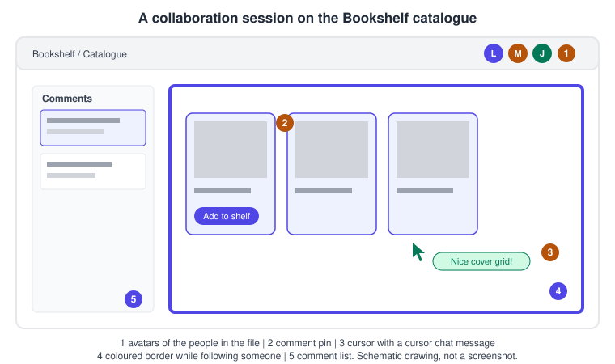
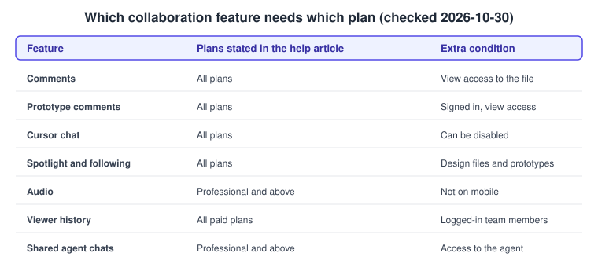
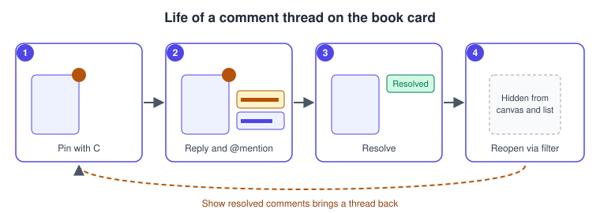

Comments and Real-Time Collaboration
|
This content was generated with the assistance of AI and should be verified against the official documentation before being relied on in production. |
This page was written on 2026-10-30 against the UI3 interface of Figma Design, which is the only interface since the old UI was retired on 2025-04-30. Most features here also exist in FigJam and Figma Slides, and the notes below say where the help articles differ. Comments, prototype comments, cursor chat and spotlight are listed as available on all plans, and commenting needs at least view access to the file. Audio needs a Professional, Education, Organization or Enterprise plan. Viewer history is a paid-plan feature. Agent chats need a Professional, Organization or Enterprise plan plus access to the Figma agent. The seat names are Full, Dev, Collab and View. The help articles read for this page do not tie these features to a seat type, so check the current article before relying on a seat for a particular feature. None of these features is marked as beta in the articles read, except that anything involving the agent changes quickly, so re-check it.
The running example is the Bookshelf catalogue screen. Lena, the designer, shares the file with Marcus, a developer, and Jo, a product manager. They need to agree on the cover grid without exchanging screenshots. Figma is multiplayer: everybody who opens the file works in the same live copy, sees the others as avatars and coloured cursors, and sees changes as they happen. The tools below add conversation on top of that shared canvas.

Who can do what
| Feature | Plans stated in the help article | Notes |
|---|---|---|
Comments |
All plans |
Needs at least view access to the file. |
Prototype comments |
All plans |
Signed-in user with at least view access. |
Cursor chat |
All plans |
Not supported with screen readers. |
Spotlight and following |
All plans |
Applies to Figma Design files and prototypes. |
Audio |
Professional, Education, Organization, Enterprise |
Not available on mobile, in prototypes or in presentation view. Organization admins can turn it off. |
Viewer history |
All paid plans |
Records logged-in members of the team or organization only. |
Shared agent chats |
Professional, Organization, Enterprise |
Needs access to the Figma agent in the file. |

Comments
A comment is a note pinned to a spot on the canvas. It is the main way to ask a question about a design without changing it.
Adding a comment
Press C (the same on macOS and Windows) or choose the comment tool in the toolbar to enter comment mode. Click a spot to drop a pin, or click and drag to mark a region. Type the message and send it. Pins and regions attach to top-level frames, components or groups and move with them. They do not attach to nested layers. In comment mode you cannot edit objects, so press Esc or pick another tool to go back to designing.
Inside a comment you can:
-
type @ and a name, email address or user group to mention someone. Mentioned people get an email with a design preview and an in-app notification if those are enabled. Which people you can mention depends on your plan and permission level, and user groups can be mentioned only on Organization and Enterprise plans
-
attach up to five PNG, JPEG or GIF images, by drag and drop, paste or the image icon
-
add emoji and reply to an existing thread
Figma limits you to 100 comments per hour, counting new comments and replies across all files and prototypes. Time-stamped comments are only available in Figma Motion.
Managing comments
Comments appear as pins on the canvas, and nearby pins group into clusters when you zoom out. The right sidebar lists them, one thread after another, with the page each belongs to. Open the list from the comments button in the toolbar or by pressing C. The list can be sorted by date or by unread, and filtered to show only your threads, only the current page, or resolved comments.
| Action | macOS | Windows |
|---|---|---|
Enter comment mode |
C |
C |
Show or hide comments on the canvas |
Shift C |
Shift C |
Leave comment mode |
Esc |
Esc |
Send a reply |
Return |
Enter |
To resolve a thread, select it and use the resolve control in its top-right corner. It disappears from the canvas and the list. To reopen it, enter comment mode, switch on Show resolved comments and unresolve the thread. You can delete only comments you wrote. Deleting a comment or a whole thread is permanent and restoring an older file version does not bring it back. Prefer resolving to deleting.

Procedure: collect feedback on the cover grid
-
Open the Bookshelf catalogue file and select the catalogue frame.
-
Press C and click the top-left corner of the first book card to drop a pin.
-
Type "Should covers be 2:3 or square?" and mention Marcus with @. Send the comment.
-
Marcus opens the comments list in the right sidebar, selects the thread and replies, attaching a screenshot of the current shelf.
-
Lena answers, applies the change and selects the resolve control on the thread.
-
Press Esc to leave comment mode, then Shift C if you want the pins hidden while you present the result.
Comments on prototypes
Anyone signed in with at least view access can comment while playing a prototype. Open the prototype in presentation view, go to the screen, press C or select the comment tool, click or drag, type and send. The comment also appears in the design file. Resolve a thread by opening it. In presentation view, the Options menu in the toolbar offers Show resolved comments and Show only your comments. Comments do not display while the toolbar and footer are hidden. Notification emails for prototype comments open the presentation view. Testing flows are covered on Presenting and Testing Prototypes, and structured feedback sessions on Usability Testing and Iteration.
Cursor chat
Cursor chat lets you type a short message next to your cursor that collaborators see live. Press the slash key or right-click the canvas and choose Cursor chat. Messages stay visible for five seconds after you stop typing and are not logged, so cleared messages are gone. A message is limited to 52 characters, and pressing Enter starts a new line that replaces the previous message. Use it for "look at this card" and use comments for anything that must survive the session.
Audio conversations
Audio lets collaborators talk without leaving the file. Hover over your avatar in the toolbar, open the Multiplayer tools menu and choose Start conversation. Others join with Join conversation in the toolbar. Controls for muting, settings and leaving appear once you are in. It works in Figma Design, FigJam and Figma Slides files, one conversation per file, in the desktop app and supported browsers. It is not available on mobile, in prototypes or in presentation view. The conversation ends when the last person leaves. Figma states that it does not record or monitor audio conversations. Anyone with access to the file can use audio, and an Organization admin can turn the feature off.
Following and spotlight
Following lets you watch someone else’s view. Click a collaborator’s avatar in the toolbar. A border in their colour appears around your canvas and a message at the top says who you follow. Click the stop control at the top of the canvas to leave. The help article says the person you follow is not told, though your cursor can still be visible to them.
Spotlight works the other way round. Open the Multiplayer tools menu from your avatar and choose Spotlight me. Everyone in the file is notified and, after a few seconds, moves to your view unless they select Not now. You can also hover over someone’s avatar and choose Ask to spotlight, which they can accept or reject. Spotlight shares canvas actions, not your toolbar or sidebar actions. In a prototype in presentation view, hover at the top of the screen to reach the menu bar and use the same avatar actions. Viewers can switch off automatic following under accessibility settings, reachable from the Actions menu with Command K on macOS or Ctrl K on Windows.
Procedure: walk the team through the shelf
-
Lena opens the Bookshelf file, then hovers over her avatar in the toolbar and opens the Multiplayer tools menu.
-
She chooses Spotlight me. Marcus and Jo see a prompt and, unless they choose Not now, move to her view.
-
Lena pans to the catalogue grid and says her point over an audio conversation started from the same menu.
-
When she is done she selects Stop at the top of the canvas.
-
Marcus clicks Jo’s avatar to follow her while she reviews the detail screen, and selects the stop control to return to his own view.
Viewer history
Viewer history shows who has opened a file. Click your avatar in the right sidebar of the file. The dropdown lists people under Currently viewing and Previously viewed, and hovering over a name offers their profile. It works in Figma Design, FigJam and Figma Slides on paid plans. Only logged-in members of the same team or organization, including invited guests, are recorded. Visitors through a public link or open session, or from outside the organization, appear only as current viewers. There is no history for visits before the feature launched in February 2025. Anyone can opt out under avatar, Settings, Account, View history. The opt-out applies to the whole account, stops future recording and also stops you from seeing others' history, but does not delete existing history. It is not an access control: to keep people out, change the file’s sharing settings, described on Files, Folders, Teams and Sharing.
Agent chats
Conversations with the Figma agent in a design file live in the Agents tab of the left navigation bar, which lists the file’s chats by recency. Since 2026-06-23, new chats in Figma Design are visible by default to people with access to the file, and chats created before that date stay private unless the creator makes them shared. Another help article describes the default as limited to people with a Full seat and edit access, so confirm in the current article which applies to your account. A shared chat can be viewed by collaborators but only its creator can continue it. A private chat is visible only to its creator. Open the chat, choose More options in its header and set it to shared or private, or use Make your existing chats private in the chat list. Chat access, then Copy link to chat, copies a link for a shared chat. Agent features need a Professional, Organization or Enterprise plan.
Common mistakes
-
Pinning a comment on a nested layer and expecting it to follow it. Pins attach to top-level frames, components or groups.
-
Deleting a thread to tidy up. Deletion is permanent, so resolve instead.
-
Using cursor chat for decisions. It leaves no record after five seconds.
-
Assuming viewer history proves nobody looked at a file. Public-link visitors are not recorded.
-
Leaving private agent chats that the team needs. Make the useful ones shared.
What older guides say that is no longer current
-
Guides written before 2025-04-30 describe the old interface, with the top toolbar and the old right panel. In UI3 comments, avatars and the multiplayer tools are in the bottom toolbar, the right sidebar and the left navigation bar, the last of which was redesigned on 2026-01-07.
-
Guides that speak of "editors" and "viewers" predate the Full, Dev, Collab and View seat model of 2025-03-11. Commenting is described by Figma by file access and plan, not by the old editor and viewer labels.
-
Guides that name third-party tools for collecting feedback treat them as add-ons. Figma now offers comments, prototype comments, audio and agent chats natively. Third-party testing services are covered as ecosystem on Usability Testing and Iteration.
-
Guides that describe the version history and branching workflow as the only way to coordinate changes should be read together with Version History and Branching, which reflects the current plan limits.
-
Viewer history, shared agent chats and the Figma agent did not exist when most guides were written.